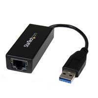

A Ceph cluster on Raspberry Pi is an awesome way to create a RADOS home storage
solution (NAS) that is highly redundant and low power usage. It's also a low cost way
to get into Ceph, which may or may not be the future of storage (software defined
storage definitely is as a whole). Ceph on ARM is an interesting idea in and of itself.
I built one of these as a development environment (playground) for home. It can be
done on a relatively small budget. Since this was a spur of the moment idea, I
purchased everything locally. I opted for the
Raspberry Pi 2
B (for the 4 cores and 1GB of RAM). I'd really recommend going with the Pi 2 B,
so you have one core and 256MB RAM for each USB port (potential OSD). In this guide I
will outline the parts, software I used and some options that you can use for
achieving better performance. This guide assumes you have access to a Linux PC with
an SD card reader. It also assumes you have a working knowledge of Linux in general
and a passing familiarity with Ceph.
Parts
Also check: Bits and Parts
Although I will explain many options in this guide, this is the minimum you will need
to get a cluster up and running, this list assumes 3 Pi nodes.
--------------------------------------------------------------------------------------
3 x 3ft Cat6 Cables
3 x Raspberry Pi 2 B
3 x Raspberry Pi 2 B Case
3 x 2 Amp Micro USB Power Supply
3 empty ports on a gigabit router
3 x Class 10 MicroSD (16GB or more) for OS drive
3-12 x USB 2.0 Flash Drives (at least 32GB, better drive for better performance)
--------------------------------------------------------------------------------------
Note: 1. 3 x SD card reader.
2. 128GB MicroSD will be better, since we need to host compute VM for computation
or data manipulation
3. Pi 3 would be better, it can power one external (1T or 2T) usb harddisk.
But 1M memory for 1GB storage, will 512G disk be the maximum? Why 1M
memory for 1GB storage? From somewhere, I read Pi 3 needs a heat sink.
--------------------------------------------------------------------------------------
Yes, I found it! 1M
memory for 1G storage, but this is for MDS and MON. OSDs do not require as
much RAM for regular operations (e.g., 500MB of RAM per daemon instance);
however, during recovery they need significantly more RAM (e.g., ~1GB per 1TB
of storage per daemon).
Would ODROID-C2 be a better choice? 2GB DDR3 SDRAM and Gigabit Ethernet.
But, it does not support native Wi-Fi and Bluetooth wireless connection standards
by default. Also, there is one more candidate: ODROID-XU4
- The C2 is very impressive and has the following benefits over the Pi 3 : GigE,
HEVC 10 bit, HDMI 2.0 2160/60p output, HD Audio bit streaming, and very swift.
- Pi 3 has two main advantages over the C2 : Integrated WiFi and Bluetooth, Full
3D MVC decode and frame packed 24p output and PCM 5.1/7.1 output (which should
be possible on the C2 but has yet to appear), much more up to date Linux kernel,
so far better support for current USB DVB tuners, WiFi dongles etc.
- The Pi 3 also has a much larger development team and is probably still better
supported. (I'm not dissing the C2 developers at all - just that as there are
fewer of them, some stuff takes longer to appear, and if they decide to
concentrate on other platforms in a few months then support will wane)
- ODROID-XU4 ($74, Cortex-A15, [8] Octacore, Samsung, that's bad, 4x Cortex-A15 @
2.0GHz and 4x Cortex-A7 @ 1.4GHz) has two builtin USB3 ports. eMMC, stands for
embedded MultiMediaCard. 64GB eMMC Module
U Linux with Transcend USB 3.0 adapter $75.9. (Only red ones work with xu4)
Total: $171.59 Caveat: both Cortex-A15 and Cortex-A7 are 32-bit CPUs, am I right?
- ODROID-XU4 Review
8 cores, 2 USB 3.0 ports, 1 USB 2.0 port. 2GB ram, GB ethernet. With 1
(or 2) TB external USB 3.0 disk, 1G memory for ceph, we can have 2 more VMs
(via kvm?) for data processing.
Do we need 128GB USB 3.0 flash disk? VM templates do need a lot of space.
If we do get this flash disk, our VMs will be placed in here, but no more
USB 3.0 port! Also, do we have enough power supply for USB 3.0 TB disk and
USB 3.0 flash disk simultaneously?
USB3 to Ethernet Adaptor: This ethernet adapter will be attached to the head
node to allow external communications. This way, head node will not be able
to have 128GB USB 3.0 flash disk. Hence, no VMs can be created on it. By the
way, USB 3.0 to Gigabit Ethernet Adapter adds a single RJ45 Ethernet port to
a USB-enabled computer system, with support for Gigabit network connections
at full bandwidth, unlike USB 2.0 adapters.

XU4 Shifter Shield ($18) is a must-have for I/O expansion
and electronics experiments.
- Partitions of 64GB eMMC:
Partition Contents
Check At least two partitions, first partition can be ext4
Partition 1:
Kernel Image (zImage)
boot.scr
exynos5422-odroidxu3.dtb
uInitrd (if applicable)
Partition 2:
rootfs (a.k.a. File System)
- 14GB for root
Note: Using dd command, it would create two partitions in this logic
disk, am I right?
- 2GB for swap
- 8GB for tmp
- 8GB for var
- 12GB for /usr/local
- 20GB for /src1
During ceph source compilation, we need more than 25GB disk space. Hence,
cnfs (ceph nfs) VM has 40GB root filesystem.
- odroid-xu4 spec xu4
release_debian Flashing Linux image onto eMMC
- WiFi Module
5, USB 3.0, $21.95, (only master node needs wifi-module-5?)
WiFi Module 4, USB 2.0 host interface
$14.00. Only the Ceph master needs this gadget? Also, a GB switch or gateway
for this ceph cluster?
We only have two USB3 ports, one for 1 (or 2) TB USB3 hard disk, the other
for 128 GB USB 3.0 flash disk. The VM images are to be created in this
flash disk, I think.
- arch/arm/configs/odroidxu4_defconfig linux 4.8
linux 4.8
- compile a custom Linux kernel
# Probably, may compile kernel by ourself.
$ find /src3/kernel/linux-source-4.8/ -name "*[Oo]droid*"
/src3/kernel/linux-source-4.8/arch/arm64/boot/dts/amlogic/meson-gxbb-odroidc2.dts
/src3/kernel/linux-source-4.8/arch/arm/boot/dts/exynos4412-odroidu3.dts
/src3/kernel/linux-source-4.8/arch/arm/boot/dts/exynos5422-odroidxu4.dts
/src3/kernel/linux-source-4.8/arch/arm/boot/dts/meson8b-odroidc1.dts
/src3/kernel/linux-source-4.8/arch/arm/boot/dts/exynos54xx-odroidxu-leds.dtsi
/src3/kernel/linux-source-4.8/arch/arm/boot/dts/exynos5410-odroidxu.dts
/src3/kernel/linux-source-4.8/arch/arm/boot/dts/exynos4412-odroid-common.dtsi
/src3/kernel/linux-source-4.8/arch/arm/boot/dts/exynos5422-odroidxu3-common.dtsi
/src3/kernel/linux-source-4.8/arch/arm/boot/dts/exynos4412-odroidx.dts
/src3/kernel/linux-source-4.8/arch/arm/boot/dts/exynos5422-odroidxu3-lite.dts
/src3/kernel/linux-source-4.8/arch/arm/boot/dts/exynos5422-odroidxu3.dts
/src3/kernel/linux-source-4.8/arch/arm/boot/dts/exynos5422-odroidxu3-audio.dtsi
/src3/kernel/linux-source-4.8/arch/arm/boot/dts/exynos4412-odroidx2.dts
- Build kernel: ODROID building linux kernel (Linux 3.10, too old?)
Especially, Kernel Rebuild Guide
Ubuntu 16.04 LTS (Kernel 3.10.92)
- build my own image or kernel
- use the u-boot mainline to boot mainline 4.x kernel.
- odroidxu4 tune network and usb
- eMMC Recovery Tool for XU3/XU4
Wish we don't need this. Just in case.
- So, we need 5xOdroid-XU4, 5x 64GB eMMC (with Transcend USB 3.0 adapter),
5x1TB-USB-3-external-Disk, 5xFlashDisk, 1xWiFi Module 4, 1xGB Switch. Am I
missing anything else? Maybe one or two spare parts?
- Software archives
Ceph On Odroid-XU4
Install Ubuntu on ODROID-XU4
odroidxu4-v4.2, release candidate.
- odroid-c2 review
I used 3 x 64GB flash drives, 3 x 32GB MicroSD and existing ports on my router. My
cost came in at about $250. You can add to this list based on what you add to your
setup throughout the guide, but this is pretty much the minimum for a fully functional
Ceph cluster.
Operating System
Raspbian. The testing repository for Raspbian has the many packages of Ceph 0.80.9
and dependencies pre-compiled. Everything you'll need for this tutorial and is the "de
facto" OS of choice for flexibility on Raspberry Pi. You can download the Raspbian image
here: Raspbian Download. Once you have the image, you'll want to put it on an
SD card. For this application I recommend using at least a 16GB MicroSD card (Class 10
preferably - OS drive speed matters for Ceph monitor processes). To transfer the image
on Linux, you can use DD. Run the lsblk command to display your devices once
you've inserted the card into your card reader. Then you can use dd to transfer the
image to your SD. The command below assumes the image name is raspbian-wheezy.img and
that it lives in your present working directory. The above command also assumes that
your SD card is located at /dev/mmcblk0 adjust these accordingly and make sure that your
SD card doesn't contain anything important and is empty.
--------------------------------------------------------------------------------------
sudo dd bs=4M if=raspbian-wheezy.img of=/dev/mmcblk0
--------------------------------------------------------------------------------------
This command will take a few minutes to complete. Once it does, run sync
to flush all cache to disk and make sure it is safe to remove the device. You'll
then boot up into Raspbian, re-size the image to the full size of your MicroSD, set
a memorable password, overclock if you want.
Once this is done there are a few modifications to make. We'll get into this in the
installation section below. I don't recommend using too large of a MicroSD as later in
this tutorial we will image the whole OS from our first MicroSD for deployment to our
other Pi nodes.
Hardware Limitations
The first limitation to consider is overall storage space. Ceph OSD processes
require roughly 1MB of RAM per GB of storage. Since we are co-locating monitor
processes the effective storage limitation is 512GB per Pi 2 B (4 x 128GB sticks) RAW
(before Ceph replication or erasure coding overhead).
Network speed is also a factor as discussed later in document. You will hit network
speed limitations before you hit the speed limitations of the Pi 2 B's single USB 2.0
bus (480Mbit).
Network
In this setup I used empty ports on my router. I run a local DNS server on my home
router and use static assignments for local DNS. You may want to consider just using a
flat 5 or 8 port (depending on number of nodes you plan to have) gigabit switch for the
cluster network and WiPi modules for the public (connected to your router via WiFi).
The nice thing about using a flat layer 2 switch is that if all the Pi nodes are in the
same subnet, you don't have to worry about a gateway and it also keeps the cost down
(compared to using router ports) while reducing the network overhead (for Ceph
replication) on your home network. Using a dedicated switch for the cluster network will
also increase your cluster performance, especially considering the 100Mbit limitations
of the Pi 2 B's network port. By using a BGN Dongle
for Pi and a dedicated switch for the cluster network, you will get a speedier
cluster. This will use one of your 4 USB ports and thus, you will get one less OSD per
Pi. Keep in mind, depending on if you use replication or erasure coding private traffic
can be 1-X times greater then client IO (X being 3 in a standard replication profile)
if that matters for your application. Of course this is all optional and for additional
"clustery goodness". It really depends on budget, usage - etcetera.
Object Storage Daemons
In this guide, I co-located OSD journals on the OSD drives. For better performance,
you can use a faster USB like the SanDisk Extreme 3.0 (keep in mind that you'll be
limited by the 60MB/s speed of USB 2.0). Using a dedicated (faster) journal drive will
yield much better performance. But you don't really need to worry about it unless you
are using multiple networks as outlined above. If you are not, 4 decent USB sticks
will saturate your 100Mbit NIC per node. There is a lot more to learn about Ceph
architecture that I cover in this article and I highly recommend you do so
here.
OSD Filesystem
XFS is the default in Ceph Firefly. I prefer BTRFS as an OSD filesystem
for multi-fold reasons and I use it in this tutorial.
Installation
Assuming you have setup your network and operating system - have 3 nodes and the
hardware you want to use - we can begin. The first thing to do is wire up power and
network as you see fit. After that, you'll want to run through the initial raspi-config
on what will become your admin node. Then it's time to make some changes. Once your admin
node is booted and configured, you have to edit /etc/apt/sources.list.
Raspbian Wheezy has archaic versions of Ceph in the main repository, but the latest
firefly version in the testing repository. Before we delve into this, I find it useful
to install some basic tools and requirements. Connect via SSH or directly to terminal
and issue this command from the Pi:
--------------------------------------------------------------------------------------
sudo apt-get install vim screen htop iotop btrfs-tools lsb-release gdisk
--------------------------------------------------------------------------------------
From this point forward we will assume you are connecting to your Pi nodes via SSH.
You've just installed BTRFS-tools, vim (better then vi) and some performance diagnostics
tools I like. Now that we have vim it's time to edit our sources:
--------------------------------------------------------------------------------------
vi /etc/apt/sources.list
--------------------------------------------------------------------------------------
You'll see the contents of your sources file. Which will look like this:
--------------------------------------------------------------------------------------
deb http://mirrordirector.raspbian.org/raspbian/ wheezy main contrib non-free rpi
# Uncomment line below then 'apt-get update' to enable 'apt-get source'
#deb-src http://archive.raspbian.org/raspbian/ wheezy main contrib non-free rpi
--------------------------------------------------------------------------------------
Modify it to look like this:
--------------------------------------------------------------------------------------
deb http://mirrordirector.raspbian.org/raspbian/ testing main contrib non-free rpi
# Uncomment line below then 'apt-get update' to enable 'apt-get source'
#deb-src http://archive.raspbian.org/raspbian/ testing main contrib non-free rpi
--------------------------------------------------------------------------------------
We've replaced wheezy with testing. Once this is done,
then issue this command:
--------------------------------------------------------------------------------------
sudo apt-get update
--------------------------------------------------------------------------------------
Once this process has completed is time to start getting the OS ready for Ceph.
Everything we do in this section up to the point of imaging the OS is needed for nodes
that will run Ceph.
First we will create a ceph user and give it password-less sudo access. To do so
issue these commands:
--------------------------------------------------------------------------------------
ssh user@ceph-server
sudo useradd -d /home/ceph -m ceph
sudo passwd ceph
--------------------------------------------------------------------------------------
Set the password to a memorable one as it will be used on all of your nodes in this
guide. Now we need to give the ceph user sudo access
--------------------------------------------------------------------------------------
echo "ceph ALL = (root) NOPASSWD:ALL" | sudo tee /etc/sudoers.d/ceph
sudo chmod 0440 /etc/sudoers.d/ceph
--------------------------------------------------------------------------------------
We'll be using ceph-deploy later and it's best to have a defult user to login as all
the time. Issue this command:
--------------------------------------------------------------------------------------
mkdir -p ~/.ssh/
--------------------------------------------------------------------------------------
Then create this file using vi:
--------------------------------------------------------------------------------------
vi ~/.ssh/config
--------------------------------------------------------------------------------------
I assume 3 nodes in this tutorial and a naming convention of piY, where Y is the
node number starting from 1.
--------------------------------------------------------------------------------------
Host pi1
Hostname pi1
User ceph
Host pi2
Hostname pi2
User ceph
Host pi3
Hostname pi3
User ceph
--------------------------------------------------------------------------------------
Save the file and exit. As far as hostnames, you can use whatever you want of
course. As I mentioned, I run local DNS and DHCP with static assignments. If you do not,
you'll need to edit /etc/hosts so that your nodes can resolve each-other.
You can do this after the OS image, as each node will have a different IP.
Now it's time to install the ceph-deploy tool. Raspbian wget can be strange
with HTTPS so we will ignore the certificate (do so at your own peril):
--------------------------------------------------------------------------------------
wget --no-check-certificate -q -O- 'https://ceph.com/git/?p=ceph.git;a=blob_plain;f=keys/release.asc' | sudo apt-key add -
echo deb http://ceph.com/debian-firefly/ wheezy main | sudo tee /etc/apt/sources.list.d/ceph.list
--------------------------------------------------------------------------------------
Now that we've added the Ceph repository, we can install ceph-deploy:
--------------------------------------------------------------------------------------
sudo apt-get update && sudo apt-get install ceph-deploy ceph ceph-common
--------------------------------------------------------------------------------------
Since we are installing ceph from the Raspbian repositories, we need to change the
default behavior of ceph-deploy:
--------------------------------------------------------------------------------------
sudo vi /usr/share/pyshared/ceph_deploy/hosts/debian/install.py
--------------------------------------------------------------------------------------
Change
--------------------------------------------------------------------------------------
def install(distro, version_kind, version, adjust_repos):
codename = distro.codename
machine = distro.machine_type
--------------------------------------------------------------------------------------
To
--------------------------------------------------------------------------------------
def install(distro, version_kind, version, adjust_repos):
adjust_repos = False
codename = distro.codename
machine = distro.machine_type
--------------------------------------------------------------------------------------
This will prevent ceph-deploy from altering repos as the Ceph armhf (Rasberry Pi's
processor type) repos are mostly empty.
Finally, we should revert the contents of /etc/apt/sources.list :
--------------------------------------------------------------------------------------
sudo vi /etc/apt/sources.list
--------------------------------------------------------------------------------------
You'll see the contents of your sources file. Which will look like this:
--------------------------------------------------------------------------------------
deb http://mirrordirector.raspbian.org/raspbian/ testing main contrib non-free rpi
# Uncomment line below then 'apt-get update' to enable 'apt-get source'
#deb-src http://archive.raspbian.org/raspbian/ testing main contrib non-free rpi
--------------------------------------------------------------------------------------
Modify it to look like this:
--------------------------------------------------------------------------------------
deb http://mirrordirector.raspbian.org/raspbian/ wheezy main contrib non-free rpi
# Uncomment line below then 'apt-get update' to enable 'apt-get source'
#deb-src http://archive.raspbian.org/raspbian/ wheezy main contrib non-free rpi
--------------------------------------------------------------------------------------
We've replaced testing with wheezy. Once this is done, then issue this
command:
--------------------------------------------------------------------------------------
sudo apt-get update
--------------------------------------------------------------------------------------
Kernel Tweaks
We are also going to tweak some kernel parameters for better stability. To do so we
will edit /etc/sysctl.conf.
--------------------------------------------------------------------------------------
vi /etc/sysctl.conf
--------------------------------------------------------------------------------------
At the bottom of the file, change add the following lines:
--------------------------------------------------------------------------------------
vm.swappiness=1
vm.min_free_kbytes = 32768
kernel.pid_max = 32768
--------------------------------------------------------------------------------------
Imaging the OS
Now we have a good baseline for deploying ceph to our other Pi nodes. It's time to
stop our admin node and image the drive (MicroSD). Issue:
--------------------------------------------------------------------------------------
sudo halt
--------------------------------------------------------------------------------------
Then unplug power to your Pi node and remove the MicroSD. Insert the microSD in your
SD adapter, then the SD adapter into your Linux PC. You'll need at least as much free
drive space on your PC as the size of the MicroSD card. Where /dev/mmcblk0
is your SD card and ceph-pi.img is your image destination, run:
--------------------------------------------------------------------------------------
sudo dd if=/dev/mmcblk0 of=ceph-pi.img bs=4M
--------------------------------------------------------------------------------------
This can take a vary long time depending on the size of your SD and you can compress
it with gzip or xz for long term storage (empty space compresses really well it turns
out). Once the command returns, run sync to flush the cache to disk and make
sure you can remove the MicroSD
Imaging Your Nodes OS Drives
Now that you have a good baseline image on your PC, you are ready to crank out
"Ceph-Pi" nodes - without redoing all of the above. To do so, insert a fresh MicroSD
into your adapter and then PC. Then assuming ceph-pi.img is your OS image and
/dev/mmcblk0 is your MicroSD card, run:
--------------------------------------------------------------------------------------
sudo dd if=ceph-pi.img of=/dev/mmcblk0 bs=4M
--------------------------------------------------------------------------------------
Repeat this for as many nodes as you intend to deploy.
Create a Ceph Cluster on Raspberry Pi
Insert your ceph-pi MicroSD cards into your Pi nodes and power them all on. You've
made it this far, now it's time to get "cephy". Deploying with ceph-deploy is a breeze.
First we need to SSH to our admin node, make sure you have setup IPs, network and
/etc/hosts on all Pi nodes if you are not using local DNS and DHCP with
static assignments.
We need to generate and distribute an SSH key for password-less authentication
between nodes. To do so, run (leave the password blank):
--------------------------------------------------------------------------------------
ssh-keygen
Generating public/private key pair.
Enter file in which to save the key (/ceph-client/.ssh/id_rsa):
Enter passphrase (empty for no passphrase):
Enter same passphrase again:
Your identification has been saved in /ceph-client/.ssh/id_rsa.
Your public key has been saved in /ceph-client/.ssh/id_rsa.pub.
--------------------------------------------------------------------------------------
Now copy the key to all nodes (assuming 3 with the naming convention from above):
--------------------------------------------------------------------------------------
ssh-copy-id ceph@pi1
ssh-copy-id ceph@pi2
ssh-copy-id ceph@pi3
--------------------------------------------------------------------------------------
You will be prompted for the password you created for the ceph user each time to
establish initial authentication.
Once that is done and you are connected to your admin node (1st node in the cluster)
as the pi user you'll want to create an admin node directory:
--------------------------------------------------------------------------------------
mkdir -p ~/ceph-pi-cluster
cd ~/ceph-pi-cluster
--------------------------------------------------------------------------------------
Creating an initial Ceph Configuration
We are going to create an initial Ceph configuration assuming all 3 pi nodes as
monitors. If you have more, keep in mind - you always want an odd number of monitors to
avoid a split-brain scenario. To to this run:
--------------------------------------------------------------------------------------
ceph-deploy new pi1 pi2 pi3
--------------------------------------------------------------------------------------
Now there are some special tweaks that should be made for best stability and
performance within the hardware limitations of the Raspberry Pi 2 B. To apply these
changes we'll need to edit the ceph.conf here on the admin node before it
is distributed. To do so:
--------------------------------------------------------------------------------------
vi ~/ceph-pi-cluster/ceph.conf
--------------------------------------------------------------------------------------
After the existing lines add:
--------------------------------------------------------------------------------------
# Disable in-memory logs
debug_lockdep = 0/0
debug_context = 0/0
debug_crush = 0/0
debug_buffer = 0/0
debug_timer = 0/0
debug_filer = 0/0
debug_objecter = 0/0
debug_rados = 0/0
debug_rbd = 0/0
debug_journaler = 0/0
debug_objectcatcher = 0/0
debug_client = 0/0
debug_osd = 0/0
debug_optracker = 0/0
debug_objclass = 0/0
debug_filestore = 0/0
debug_journal = 0/0
debug_ms = 0/0
debug_monc = 0/0
debug_tp = 0/0
debug_auth = 0/0
debug_finisher = 0/0
debug_heartbeatmap = 0/0
debug_perfcounter = 0/0
debug_asok = 0/0
debug_throttle = 0/0
debug_mon = 0/0
debug_paxos = 0/0
debug_rgw = 0/0
osd heartbeat grace = 8
[mon]
mon compact on start = true
mon osd down out subtree_limit = host
[osd]
# Filesystem Optimizations
osd mkfs type = btrfs
osd journal size = 1024
# Performance tuning
max open files = 327680
osd op threads = 2
filestore op threads = 2
#Capacity Tuning
osd backfill full ratio = 0.95
mon osd nearfull ratio = 0.90
mon osd full ratio = 0.95
# Recovery tuning
osd recovery max active = 1
osd recovery max single start = 1
osd max backfills = 1
osd recovery op priority = 1
# Optimize Filestore Merge and Split
filestore merge threshold = 40
filestore split multiple = 8
--------------------------------------------------------------------------------------
Creating Initial Monitors
Now we can deploy our spiffy ceph.conf, create our initial monitor daemons, deploy
our authentication keyring and chmod it as needed. We will be deploying to all 3 nodes
for the purposes of this guide:
--------------------------------------------------------------------------------------
ceph-deploy mon create-initial
ceph-deploy admin pi1 pi2 pi3
for i in pi1 pi2 pi3;do ssh $i chmod 644 /etc/ceph/ceph.client.admin.keyring;done
--------------------------------------------------------------------------------------
Creating OSDs (Object Storage Daemons)
Ready to create some storage? I know I am. Insert your USB keys of choice into
your Pi USB ports. For the purposes of this guide I will be deploying 1 OSD (USB key)
per Pi node. I will also be using the BTRFS filesystem and co-locating the journals on
the OSDs with a default journal size of 1GB (assuming 2 * 40MB/s throughput max and a
default filestore max sync interval of 5). This value is hard coded into our ceph-pi
config above. The formula is:
--------------------------------------------------------------------------------------
osd journal size = {2 * (expected throughput * filestore max sync interval)}
--------------------------------------------------------------------------------------
So let's deploy our OSDs. Once our USBs are plugged in, use lsblk to display
the device locations. To make sure our drives are clean and have a GPT partition table,
use the gdisk command for each OSD on each node. Assuming /dev/sda
as our OSD:
gdisk /dev/sda
Create a new partition table, write it to disk and exit. Do this for each OSD
on each node. You can craft a bash for loop if you are feeling "bashy" or
programmatic.
Once all OSD drives have a fresh partition table you can use ceph-deploy to create
your OSDs (using BTRFS for this guide) where pi1 is our present node and
/dev/sda is the OSD we are creating:
--------------------------------------------------------------------------------------
ceph-deploy osd create --fs-type btrfs pi1:/dev/sda
--------------------------------------------------------------------------------------
Repeat this for all OSD drives on all nodes (or write a for loop). Once you've
created at least 3 you are ready to move on.
Checking Cluster Health
Congratulations! You should have a working Ceph-Pi cluster. Trust, but verify. Get
the health status of your cluster using this command:
--------------------------------------------------------------------------------------
ceph -s
--------------------------------------------------------------------------------------
and for a less verbose output
--------------------------------------------------------------------------------------
ceph health
--------------------------------------------------------------------------------------
What to do now?
Use your storage cluster! Create an RBD, mount it - export NFS or CIFS. There is a
lot of reading out there. Now you know how to deploy a Ceph cluster on Raspberry Pi.
References
http://millibit.blogspot.com/2014/12/ceph-pi-installing-ceph-on-raspberry-pi.html
http://ceph.com/docs/v0.80.5/start/
https://www.raspberrypi.org/